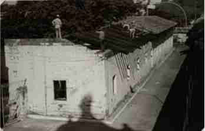

Inicialmente la casona perteneció a la familia Yegros, luego formó parte del sistema penitenciario del país. Posteriormente fue parte del Seminario Conciliar y después albergó a las Hermanas Vicentinas que fundaron el Colegio La Providencia hasta su posterior mudanza.
La propiedad pasó a ser de la Universidad Católica Nuestra Señora de la Asunción, y fue recuperado para ser un Museo que funcionó en la Curia Metropolitana, hasta el deceso del Monseñor Juan Sinforiano Bogarín. Por disposición testamentaria suya, fue trasladado al Seminario Metropolitano. En el mes de agosto de 1958, el Monseñor Agustín Blujaki se hizo cargo de la colección.
El Museo de Arte Sacro, nace de las giras pastorales del primer arzobispo del Paraguay Monseñor Juan Sinforiano Bogarín, a fines de siglo XIX y XX. Donde exhibe tallas de las antiguas misiones Jesuíticas, Tallas Franciscanas, acervos de la época colonial y del siglo XX, piezas relacionadas con la historia nacional de la época de la Guerra contra la Triple Alianza, Paraguay de la Pos guerra, Presidencia de Don Carlos Antonio López, de la Guerra del Chaco, objetos de Arte Sacro, colecciones etnográficas y arqueológicas, de gran valor, iniciados por el Etnógrafo y Arqueólogo José Antonio Gómez Perasso, ampliadas y enriquecidas por las comunidades indígenas.
La clasificación y adecuación del acervo del Museo Bogarín se efectúo en el año 1994 con la instalación de salas temáticas: Sala Jesuítica, Sala de Arte popular de los siglos XIX y XX, Sala Franciscana, Sala de Arte Sacro, Sala de Historia Nacional y Sala de Exposiciones Temáticas.
Por disposición del Monseñor Pastor Cuquejo, se incorporó al Museo Bogarín, el acervo del Museo: Tesoro de la Catedral de Asunción Monseñor Agustín Blujaki. El Museo Tesoro de la Catedral cuenta en su acervo con más de 400 piezas, entre las que se destacan la Platería de la Catedral de Asunción. El Museo Juan Sinforiano Bogarín cuenta con más de 1300 piezas musearias.
El Arquitecto Ramón Duarte Burró, miembro de la Comisión Nacional de los Bienes Culturales de la Iglesia explica: " El propósito de la Institución es la Conservación del Patrimonio Artístico y cultural de la Iglesia y también objetos relacionados a la Historia de la nación"
La construcción es propia de la época Colonial, con galería interior. La Fachada principal ubicada sobre el callejón, es sencilla, sin ornamentos, se rescata la utilización de las estructuras constructivas portantes y organizaciones espaciales simples. Pertenece al Patrimonio propio del estilo de los siglos XVIII y XIX.
Planta arquitectónica en U: El edificio, se halla emplazado en un área que hoy día pertenece a la Universidad Católica, que se accede a través del Callejón al costado de la Catedral de Asunción, por una antigua puerta de madera maciza, la cual conduce a un hall y galería interior de distribución.
Fue en 1979 que el Museo se instaló al lugar donde se encuentra hasta el día de hoy.